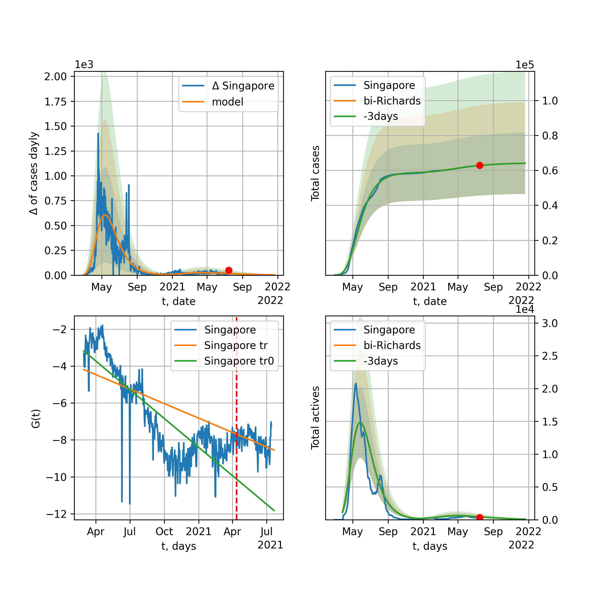
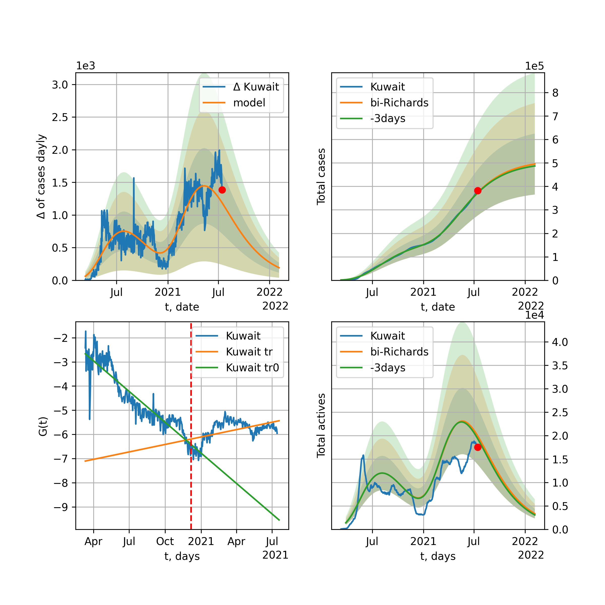

Multi-logistic model of COVID-19 dynamics
Model, code, results
Project maintained by algmaknick Hosted on GitHub Pages — Theme by mattgraham
World

World data at: 2020-06-11
+3 day model MAPE: 0.006118
model: bi-Richards
coeffs: [ 7.75437049e+06 2.00533122e+00 -2.53833068e+01 1.82392873e-02]
S.Korea scenario coeffs: [0.36242246, 2.56241634, 1.84890887, 0.13324732]
rational stdev: 0.086440
forecast at the end of period: +555 days
deltaDaycases: 2586
total cases: 15452906 ± 1335751
total death: 861917 ± 223512
bi-Richards approximation splitting point: 50
trend coefficient of determination: 0.842977
intercept: -2.332538
slope: -0.033616
trend coefficient of determination: 0.424951
intercept: -3.671722
slope: -0.008032
European Union

European Union data at: 2020-06-11
+3 day model MAPE: 0.003894
model: bi-Richards
coeffs: [ 1.64250457e+05 7.54581448e+00 -1.61904765e+01 7.28400245e-03]
rational stdev: 0.613088
forecast at the end of period: +37 days
deltaDaycases: 358
total cases: 1240261 ± 760389
total death: 132714 ± 244095
bi-Richards approximation splitting point: 83
trend coefficient of determination: 0.943065
intercept: -1.093977
slope: -0.057279
trend coefficient of determination: 0.017293
intercept: -5.245463
slope: -0.006438
Brazil

Brazil data at: 2020-06-11
+3 day model MAPE: 0.006253
model: logisticQ
coeffs: [ 1.50591647e+06 5.42272002e-06 9.12612199e+01 -1.29606353e+04]
S.Korea scenario coeffs: [0.35416971, 0.02606324, 4.35859408, 19.30413219]
rational stdev: 0.381649
forecast at the end of period: +415 days
deltaDaycases: 371
total cases: 2028743 ± 774267
total death: 103390 ± 118375
trend coefficient of determination: 0.907854
intercept_: -4.632255216337652
coeffs_: [ 0. -0.2400916 0.00123766]

Brazil data at: 2020-06-11
+3 day model MAPE: 0.010471
model: Richards
coeffs: [2.61979038e+06 8.81076101e-02 8.03221455e+01 4.53533693e-01]
S.Korea scenario coeffs: [0.36242246, 2.56241634, 1.84890887, 0.13324732]
rational stdev: 0.344325
forecast at the end of period: +485 days
deltaDaycases: 616
total cases: 3523171 ± 1213117
total death: 179550 ± 185470
trend coefficient of determination: 0.682158
intercept: -4.594570
slope: -0.055795
Russia

Russia data at: 2020-06-11
+3 day model MAPE: 0.010680
model: Richards
coeffs: [ 6.80622939e+05 2.01055774e+00 -4.59783928e+01 2.06210320e-02]
S.Korea scenario coeffs: [0.36242246, 2.56241634, 1.84890887, 0.13324732]
rational stdev: 0.421818
forecast at the end of period: +345 days
deltaDaycases: 753
total cases: 865963 ± 365279
total death: 11258 ± 14246
trend coefficient of determination: 0.963345
intercept: -1.552839
slope: -0.034842
USA

USA data at: 2020-06-11
+3 day model MAPE: 0.011613
model: Richards
coeffs: [ 2.37027554e+06 3.84095940e+00 -8.47759343e+01 9.72953648e-03]
S.Korea scenario coeffs: [0.36242246, 2.56241634, 1.84890887, 0.13324732]
rational stdev: 0.330364
forecast at the end of period: +457 days
deltaDaycases: 994
total cases: 3147829 ± 1039927
total death: 174779 ± 173221
trend coefficient of determination: 0.940670
intercept: -1.375695
slope: -0.040523
Spain

Spain data at: 2020-06-11
+3 day model MAPE: 0.000370
model: Richards
coeffs: [ 2.93360958e+05 8.16875760e+00 -5.15313474e+01 7.45429368e-03]
S.Korea scenario coeffs: [0.36242246, 2.56241634, 1.84890887, 0.13324732]
rational stdev: 0.239207
forecast at the end of period: +275 days
deltaDaycases: 125
total cases: 393537 ± 94136
total death: 36851 ± 26444
trend coefficient of determination: 0.964718
intercept: -0.683629
slope: -0.061861
Italy

Italy data at: 2020-06-11
+3 day model MAPE: 0.000738
model: Richards
coeffs: [ 2.37571196e+05 6.13783314e+00 -5.24353991e+01 9.63117148e-03]
S.Korea scenario coeffs: [0.36242246, 2.56241634, 1.84890887, 0.13324732]
rational stdev: 0.076101
forecast at the end of period: +247 days
deltaDaycases: 155
total cases: 315632 ± 24019
total death: 45668 ± 10426
trend coefficient of determination: 0.985278
intercept: -1.107238
slope: -0.056390
United Kingdom

United Kingdom data at: 2020-06-11
+3 day model MAPE: 0.000755
model: Richards
coeffs: [ 3.17164609e+05 4.11973175e+00 -6.33225883e+01 1.12614899e-02]
S.Korea scenario coeffs: [0.36242246, 2.56241634, 1.84890887, 0.13324732]
rational stdev: 0.137698
forecast at the end of period: +345 days
deltaDaycases: 185
total cases: 419826 ± 57809
total death: 59469 ± 24566
trend coefficient of determination: 0.972242
intercept: -1.375626
slope: -0.045650
France

France data at: 2020-06-11
+3 day model MAPE: 0.002568
model: bi-Richards
coeffs: [1.98086879e+04 3.23649844e+00 3.33558716e+01 2.31797727e-02]
rational stdev: 0.191512
forecast at the end of period: +37 days
deltaDaycases: 39
total cases: 162139 ± 31051
total death: 30586 ± 17572
bi-Richards approximation splitting point: 82
trend coefficient of determination: 0.897017
intercept: -0.943106
slope: -0.069267
trend coefficient of determination: 0.046218
intercept: -8.612313
slope: 0.025502
Germany

Germany data at: 2020-06-11
+3 day model MAPE: 0.003104
model: Richards
coeffs: [ 1.82567866e+05 9.29530634e+00 -4.76459491e+01 8.21398216e-03]
S.Korea scenario coeffs: [0.36242246, 2.56241634, 1.84890887, 0.13324732]
rational stdev: 0.084159
forecast at the end of period: +177 days
deltaDaycases: 146
total cases: 242926 ± 20444
total death: 11510 ± 2906
trend coefficient of determination: 0.951584
intercept: -1.452606
slope: -0.060827
Turkey

Turkey data at: 2020-06-11
+3 day model MAPE: 0.006259
model: bi-Richards
coeffs: [2.26685611e+04 8.74258426e+00 1.75183074e+01 9.26188551e-03]
rational stdev: 0.213670
forecast at the end of period: +51 days
deltaDaycases: 18
total cases: 183682 ± 39247
total death: 5027 ± 3222
bi-Richards approximation splitting point: 75
trend coefficient of determination: 0.776842
intercept: -0.966280
slope: -0.057924
trend coefficient of determination: 0.230080
intercept: -4.405755
slope: -0.010398
Iran

Iran data at: 2020-06-11
+3 day model MAPE: 0.000572
model: bi-Richards
coeffs: [1.42581873e+05 3.36249100e+00 7.22247375e+00 1.44269869e-02]
S.Korea scenario coeffs: [0.36242246, 2.56241634, 1.84890887, 0.13324732]
rational stdev: 0.282241
forecast at the end of period: +429 days
deltaDaycases: 73
total cases: 292120 ± 82448
total death: 13918 ± 11784
bi-Richards approximation splitting point: 75
trend coefficient of determination: 0.949243
intercept: -0.932714
slope: -0.055419
trend coefficient of determination: 0.008305
intercept: -4.210785
slope: -0.001340
Canada

Canada data at: 2020-06-11
+3 day model MAPE: 0.000418
model: Richards
coeffs: [ 1.10369574e+05 3.30011079e+00 -7.24920322e+01 1.27386774e-02]
S.Korea scenario coeffs: [0.36242246, 2.56241634, 1.84890887, 0.13324732]
rational stdev: 0.171502
forecast at the end of period: +420 days
deltaDaycases: 35
total cases: 147859 ± 25358
total death: 12119 ± 6235
trend coefficient of determination: 0.974423
intercept: -1.576382
slope: -0.044186
Belgium

Belgium data at: 2020-06-11
+3 day model MAPE: 0.001977
model: Richards
coeffs: [ 5.97101610e+04 5.52260106e+00 -4.25042677e+01 1.20603361e-02]
S.Korea scenario coeffs: [0.36242246, 2.56241634, 1.84890887, 0.13324732]
rational stdev: 0.654136
forecast at the end of period: +177 days
deltaDaycases: 95
total cases: 76633 ± 50129
total death: 12366 ± 24267
trend coefficient of determination: 0.956334
intercept: -1.254553
slope: -0.057101
Peru

Peru data at: 2020-06-11
+3 day model MAPE: 0.014728
model: Richards
coeffs: [ 5.93537220e+05 7.77612173e-01 -4.78405646e+01 3.22985008e-02]
S.Korea scenario coeffs: [0.36242246, 2.56241634, 1.84890887, 0.13324732]
rational stdev: 0.270958
forecast at the end of period: +765 days
deltaDaycases: 124
total cases: 793619 ± 215037
total death: 22572 ± 18348
trend coefficient of determination: 0.746613
intercept: -1.594808
slope: -0.027750
Netherlands

Netherlands data at: 2020-06-11
+3 day model MAPE: 0.005347
model: bi-Richards
coeffs: [4.00804523e+03 1.53485325e+01 3.18607408e+01 5.84269522e-03]
rational stdev: 0.138640
forecast at the end of period: +37 days
deltaDaycases: 9
total cases: 50234 ± 6964
total death: 6292 ± 2616
bi-Richards approximation splitting point: 75
trend coefficient of determination: 0.959521
intercept: -0.795591
slope: -0.061626
trend coefficient of determination: 0.016630
intercept: -5.319229
slope: -0.004208
India

India data at: 2020-06-11
+3 day model MAPE: 0.003793
model: Richards
coeffs: [ 3.76029693e+06 2.94946098e-01 -2.52621554e+01 5.40878022e-02]
S.Korea scenario coeffs: [0.36242246, 2.56241634, 1.84890887, 0.13324732]
rational stdev: 0.373053
forecast at the end of period: +1045 days
deltaDaycases: 1294
total cases: 4858245 ± 1812384
total death: 138458 ± 154956
trend coefficient of determination: 0.671828
intercept: -1.891187
slope: -0.021940
Switzerland

Switzerland data at: 2020-06-11
+3 day model MAPE: 0.001546
model: logisticQ
coeffs: [ 3.03527939e+04 5.90014935e-07 2.62028402e+01 -2.38025678e+05]
rational stdev: 0.321667
forecast at the end of period: +65 days
deltaDaycases: 0
total cases: 30352 ± 9763
total death: 1893 ± 1826
trend coefficient of determination: 0.981191
intercept_: -4.138496582184251
coeffs_: [ 0. -0.28755806 0.00151245]
Ecuador

Ecuador data at: 2020-06-10
+3 day model MAPE: 0.002664
model: Richards
coeffs: [ 5.56370732e+04 1.71139239e+00 -5.90146633e+01 2.03969198e-02]
S.Korea scenario coeffs: [0.36242246, 2.56241634, 1.84890887, 0.13324732]
rational stdev: 0.338321
forecast at the end of period: +626 days
deltaDaycases: 4
total cases: 75425 ± 25518
total death: 6313 ± 6407
trend coefficient of determination: 0.200982
intercept: -2.176259
slope: -0.035608
Portugal

Portugal data at: 2020-06-11
+3 day model MAPE: 0.005298
model: bi-Richards
coeffs: [ 2.58072424e+04 2.15896525e+00 -3.13458584e+01 1.49593960e-02]
rational stdev: 1.281396
forecast at the end of period: +205 days
deltaDaycases: 1
total cases: 53934 ± 69111
total death: 2258 ± 8680
bi-Richards approximation splitting point: 61
trend coefficient of determination: 0.883402
intercept: -0.749900
slope: -0.064948
trend coefficient of determination: 0.004695
intercept: -5.137030
slope: 0.002223
Saudi Arabia

Saudi Arabia data at: 2020-06-11
+3 day model MAPE: 0.037023
model: Richards
coeffs: [ 2.15310024e+05 8.65603954e-01 -3.28986804e+01 3.48547983e-02]
S.Korea scenario coeffs: [0.36242246, 2.56241634, 1.84890887, 0.13324732]
rational stdev: 0.392750
forecast at the end of period: +443 days
deltaDaycases: 235
total cases: 264348 ± 103822
total death: 1952 ± 2299
trend coefficient of determination: 0.225439
intercept: -2.128931
slope: -0.019333
Sweden

Sweden data at: 2020-06-11
+3 day model MAPE: 0.022091
model: Richards
coeffs: [ 7.10272541e+04 2.21423305e+00 -1.13144268e+02 1.13288025e-02]
S.Korea scenario coeffs: [0.36242246, 2.56241634, 1.84890887, 0.13324732]
rational stdev: 0.302587
forecast at the end of period: +695 days
deltaDaycases: 24
total cases: 93791 ± 28380
total death: 9350 ± 8487
trend coefficient of determination: 0.810896
intercept: -1.506800
slope: -0.031633
Pakistan

Pakistan data at: 2020-06-11
+3 day model MAPE: 0.039568
model: Richards
coeffs: [8.92498218e+06 1.31338453e-01 2.59827952e+01 8.61367514e-02]
S.Korea scenario coeffs: [0.36242246, 2.56241634, 1.84890887, 0.13324732]
rational stdev: 0.376044
forecast at the end of period: +1535 days
deltaDaycases: 1977
total cases: 11595452 ± 4360399
total death: 226784 ± 255842
trend coefficient of determination: 0.464076
intercept: -2.425368
slope: -0.019501
Ireland

Ireland data at: 2020-06-11
+3 day model MAPE: 0.002278
model: logisticQ
coeffs: [ 2.48223314e+04 1.03959734e-06 3.59478220e+01 -1.15208285e+05]
S.Korea scenario coeffs: [0.35416971, 0.02606324, 4.35859408, 19.30413219]
rational stdev: 0.300667
forecast at the end of period: +107 days
deltaDaycases: 36
total cases: 32977 ± 9915
total death: 2225 ± 2006
trend coefficient of determination: 0.977987
intercept_: -4.233464579570727
coeffs_: [ 0. -0.23360997 0.00103193]
Mexico

Mexico data at: 2020-06-11
+3 day model MAPE: 0.002853
model: Richards
coeffs: [ 6.91831977e+05 5.16048844e-01 -6.37545326e+01 3.77837584e-02]
S.Korea scenario coeffs: [0.36242246, 2.56241634, 1.84890887, 0.13324732]
rational stdev: 0.177756
forecast at the end of period: +905 days
deltaDaycases: 192
total cases: 911742 ± 162067
total death: 108504 ± 57861
trend coefficient of determination: 0.893112
intercept: -2.035730
slope: -0.023839
Singapore

Singapore data at: 2020-06-10
+3 day model MAPE: 0.020956
model: bi-Richards
coeffs: [ 3.32555006e+04 5.56200512e+00 -8.79478294e+00 8.50462786e-03]
S.Korea scenario coeffs: [0.36242246, 2.56241634, 1.84890887, 0.13324732]
rational stdev: 0.259612
forecast at the end of period: +346 days
deltaDaycases: 44
total cases: 51434 ± 13353
total death: 33 ± 25
bi-Richards approximation splitting point: 60
trend coefficient of determination: 0.125660
intercept: -2.320500
slope: -0.021656
trend coefficient of determination: 0.742699
intercept: -0.129567
slope: -0.032624
Chile

Chile data at: 2020-06-11
+3 day model MAPE: 0.026917
model: bi-Richards
coeffs: [2.06803705e+05 7.03017234e-02 7.88744934e+01 1.63810841e+00]
S.Korea scenario coeffs: [0.36242246, 2.56241634, 1.84890887, 0.13324732]
rational stdev: 0.266366
forecast at the end of period: +135 days
deltaDaycases: 599
total cases: 266756 ± 71054
total death: 4584 ± 3663
bi-Richards approximation splitting point: 12
trend coefficient of determination: 0.302640
intercept: -9.186387
slope: -0.444411
trend coefficient of determination: 0.964390
intercept: -13.966853
slope: -0.102605
Israel

Israel data at: 2020-06-11
+3 day model MAPE: 0.020741
model: bi-Richards
coeffs: [2.78413955e+03 1.51384699e+01 4.87506562e+01 1.02089699e-02]
rational stdev: 0.139099
forecast at the end of period: +23 days
deltaDaycases: 7
total cases: 19785 ± 2752
total death: 317 ± 132
bi-Richards approximation splitting point: 70
trend coefficient of determination: 0.927874
intercept: -0.987240
slope: -0.092426
trend coefficient of determination: 0.584700
intercept: -16.076771
slope: 0.131072
Austria

Austria data at: 2020-06-11
+3 day model MAPE: 0.001887
model: bi-Richards
coeffs: [ 1.98925062e+03 9.04338127e+00 -2.05469021e+01 7.17035093e-03]
rational stdev: 0.397125
forecast at the end of period: +9 days
deltaDaycases: 9
total cases: 17081 ± 6783
total death: 675 ± 804
bi-Richards approximation splitting point: 65
trend coefficient of determination: 0.933104
intercept: -1.070640
slope: -0.092218
trend coefficient of determination: 0.169268
intercept: -3.324894
slope: -0.039249
Belarus

Belarus data at: 2020-06-11
+3 day model MAPE: 0.007777
model: Richards
coeffs: [ 7.28226442e+04 3.03943484e+00 -8.13439337e+01 1.23092321e-02]
S.Korea scenario coeffs: [0.36242246, 2.56241634, 1.84890887, 0.13324732]
rational stdev: 0.174751
forecast at the end of period: +415 days
deltaDaycases: 54
total cases: 94507 ± 16515
total death: 534 ± 279
trend coefficient of determination: 0.927658
intercept: -1.702540
slope: -0.038931
Japan

Japan data at: 2020-06-11
+3 day model MAPE: 0.003030
model: bi-Richards
coeffs: [1.58112331e+03 1.02939991e+01 4.45938658e+01 6.73229845e-03]
rational stdev: 0.708315
forecast at the end of period: +30 days
deltaDaycases: 4
total cases: 17622 ± 12482
total death: 937 ± 1991
bi-Richards approximation splitting point: 115
trend coefficient of determination: 0.000612
intercept: -3.628584
slope: -0.001515
trend coefficient of determination: 0.015029
intercept: -7.025409
slope: 0.006680
Qatar

Qatar data at: 2020-06-11
+3 day model MAPE: 0.013960
model: bi-Richards
coeffs: [1.63694235e+05 2.35909457e-01 1.21561777e+01 1.35479886e-01]
S.Korea scenario coeffs: [0.36242246, 2.56241634, 1.84890887, 0.13324732]
rational stdev: 0.141250
forecast at the end of period: +639 days
deltaDaycases: 17
total cases: 221919 ± 31346
total death: 203 ± 86
bi-Richards approximation splitting point: 20
trend coefficient of determination: 0.082249
intercept: -4.500799
slope: 0.039835
trend coefficient of determination: 0.879289
intercept: -2.595238
slope: -0.030867
Poland

Poland data at: 2020-06-11
+3 day model MAPE: 0.018742
model: Richards
coeffs: [ 3.76987444e+04 3.30895520e+00 -1.13553372e+02 8.64986661e-03]
S.Korea scenario coeffs: [0.36242246, 2.56241634, 1.84890887, 0.13324732]
rational stdev: 0.339013
forecast at the end of period: +485 days
deltaDaycases: 35
total cases: 46853 ± 15883
total death: 2018 ± 2052
trend coefficient of determination: 0.798491
intercept: -1.487025
slope: -0.034259
UAE

UAE data at: 2020-06-11
+3 day model MAPE: 0.008166
model: Richards
coeffs: [ 7.16254206e+04 1.14725211e+00 -8.23529911e+01 2.47670933e-02]
S.Korea scenario coeffs: [0.36242246, 2.56241634, 1.84890887, 0.13324732]
rational stdev: 0.151205
forecast at the end of period: +639 days
deltaDaycases: 16
total cases: 95782 ± 14482
total death: 668 ± 303
trend coefficient of determination: 0.910241
intercept: -2.085614
slope: -0.032904
Romania

Romania data at: 2020-06-11
+3 day model MAPE: 0.000129
model: bi-Richards
coeffs: [ 2.79978188e+04 1.17352435e+00 -8.66132169e-02 2.45097841e-02]
rational stdev: 0.151458
forecast at the end of period: +177 days
deltaDaycases: 15
total cases: 48574 ± 7357
total death: 3139 ± 1426
bi-Richards approximation splitting point: 82
trend coefficient of determination: 0.919599
intercept: -1.324371
slope: -0.046560
trend coefficient of determination: 0.001143
intercept: -5.148292
slope: 0.001518
Ukraine

Ukraine data at: 2020-06-11
+3 day model MAPE: 0.020327
model: bi-Richards
coeffs: [9.59492220e+03 1.65675843e-01 7.92991740e+01 9.14985525e-01]
rational stdev: 0.178327
forecast at the end of period: +65 days
deltaDaycases: 6
total cases: 36787 ± 6560
total death: 1075 ± 575
bi-Richards approximation splitting point: 65
trend coefficient of determination: 0.885912
intercept: -5.291835
slope: -0.135441
trend coefficient of determination: 0.279606
intercept: -11.894087
slope: -0.017410
Indonesia

Indonesia data at: 2020-06-11
+3 day model MAPE: 0.020900
model: Richards
coeffs: [ 1.16771877e+05 9.30003846e-01 -1.42339436e+02 1.82911605e-02]
S.Korea scenario coeffs: [0.36242246, 2.56241634, 1.84890887, 0.13324732]
rational stdev: 0.228459
forecast at the end of period: +933 days
deltaDaycases: 47
total cases: 149807 ± 34224
total death: 8488 ± 5817
trend coefficient of determination: 0.778054
intercept: -2.118594
slope: -0.024708
Bangladesh

Bangladesh data at: 2020-06-11
+3 day model MAPE: 0.007644
model: bi-Richards
coeffs: [ 8.75964074e+05 5.02482716e-01 -5.28666507e+01 3.46384026e-02]
S.Korea scenario coeffs: [0.36242246, 2.56241634, 1.84890887, 0.13324732]
rational stdev: 0.407159
forecast at the end of period: +933 days
deltaDaycases: 402
total cases: 1115466 ± 454172
total death: 14991 ± 18311
bi-Richards approximation splitting point: 29
trend coefficient of determination: 0.032969
intercept: -4.311810
slope: 0.050247
trend coefficient of determination: 0.807937
intercept: -1.114188
slope: -0.029162
South_Korea

South Korea data at: 2020-06-11
+3 day model MAPE: 0.005955
model: bi-Richards
coeffs: [ 4.58999407e+03 2.74322533e+00 -1.12322085e+02 7.84510398e-03]
rational stdev: 0.165373
forecast at the end of period: +51 days
deltaDaycases: 25
total cases: 13575 ± 2244
total death: 313 ± 155
bi-Richards approximation splitting point: 73
trend coefficient of determination: 0.865701
intercept: -1.335117
slope: -0.089451
trend coefficient of determination: 0.527628
intercept: -10.656621
slope: 0.046938
Denmark

Denmark data at: 2020-06-11
+3 day model MAPE: 0.001831
model: Richards
coeffs: [ 1.23495696e+04 1.18555608e+00 -3.21284143e+01 4.41609956e-02]
S.Korea scenario coeffs: [0.36242246, 2.56241634, 1.84890887, 0.13324732]
rational stdev: 0.275514
forecast at the end of period: +247 days
deltaDaycases: 9
total cases: 16261 ± 4480
total death: 801 ± 662
trend coefficient of determination: 0.916878
intercept: -1.678795
slope: -0.050343
Serbia

Serbia data at: 2020-06-11
+3 day model MAPE: 0.006985
model: bi-Richards
coeffs: [ 4.03579208e+03 2.16523379e+00 -4.28872603e+01 1.55655107e-02]
rational stdev: 0.132777
forecast at the end of period: +37 days
deltaDaycases: 26
total cases: 13481 ± 1790
total death: 280 ± 111
bi-Richards approximation splitting point: 50
trend coefficient of determination: 0.685857
intercept: -1.217818
slope: -0.049274
trend coefficient of determination: 0.379308
intercept: -3.093184
slope: -0.029849
Kuwait

Kuwait data at: 2020-06-11
+3 day model MAPE: 0.020360
model: Richards
coeffs: [3.83988698e+04 8.84302892e-02 7.15318529e+01 1.18801880e+00]
S.Korea scenario coeffs: [0.36242246, 2.56241634, 1.84890887, 0.13324732]
rational stdev: 0.199073
forecast at the end of period: +184 days
deltaDaycases: 19
total cases: 51764 ± 10304
total death: 419 ± 250
trend coefficient of determination: 0.964799
intercept: -7.605648
slope: -0.092979
Philippines

Philippines data at: 2020-06-11
+3 day model MAPE: 0.044255
model: Richards
coeffs: [ 9.38230531e+04 1.00650005e+00 -2.08147335e+02 1.34455380e-02]
S.Korea scenario coeffs: [0.36242246, 2.56241634, 1.84890887, 0.13324732]
rational stdev: 0.363718
forecast at the end of period: +1171 days
deltaDaycases: 33
total cases: 119375 ± 43419
total death: 5115 ± 5581
trend coefficient of determination: 0.538183
intercept: -2.035683
slope: -0.027217
Norway

Norway data at: 2020-06-11
+3 day model MAPE: 0.002593
model: bi-Richards
coeffs: [4.95101845e+02 2.33929863e+00 2.63848834e+01 2.48567566e-02]
rational stdev: 0.155681
forecast at the end of period: +9 days
deltaDaycases: 8
total cases: 8681 ± 1351
total death: 244 ± 113
bi-Richards approximation splitting point: 90
trend coefficient of determination: 0.940030
intercept: -0.986635
slope: -0.069590
trend coefficient of determination: 0.079642
intercept: -9.826263
slope: 0.031651
Czechia

Czechia data at: 2020-06-11
+3 day model MAPE: 0.004367
model: bi-Richards
coeffs: [ 2.97881240e+03 3.47944702e+00 -1.14904845e+01 1.38822008e-02]
rational stdev: 1.059547
forecast at the end of period: +65 days
deltaDaycases: 2
total cases: 10829 ± 11474
total death: 360 ± 1144
bi-Richards approximation splitting point: 59
trend coefficient of determination: 0.400348
intercept: -1.477547
slope: -0.054863
trend coefficient of determination: 0.009896
intercept: -5.042897
slope: -0.003380
Colombia

Colombia data at: 2020-06-11
+3 day model MAPE: 0.001342
model: bi-Richards
coeffs: [ 1.80512308e+05 9.96917629e-01 -3.49407025e+01 2.67280530e-02]
S.Korea scenario coeffs: [0.36242246, 2.56241634, 1.84890887, 0.13324732]
rational stdev: 0.187673
forecast at the end of period: +695 days
deltaDaycases: 67
total cases: 242999 ± 45604
total death: 7997 ± 4502
bi-Richards approximation splitting point: 40
trend coefficient of determination: 0.752703
intercept: -1.054194
slope: -0.065124
trend coefficient of determination: 0.279320
intercept: -2.919677
slope: -0.006670
Australia

Australia data at: 2020-06-11
+3 day model MAPE: 0.001032
model: bi-Richards
coeffs: [ 1.06293394e+03 6.58771734e+00 -4.88927088e+01 7.69461007e-03]
rational stdev: 0.697816
forecast at the end of period: +37 days
deltaDaycases: 0
total cases: 7346 ± 5126
total death: 102 ± 213
bi-Richards approximation splitting point: 50
trend coefficient of determination: 0.755567
intercept: -0.975693
slope: -0.083533
trend coefficient of determination: 0.213122
intercept: -5.108310
slope: -0.019256
Malaysia

Malaysia data at: 2020-06-11
+3 day model MAPE: 0.016333
model: bi-Richards
coeffs: [3.24908886e+03 2.02442453e+00 1.53892944e+01 2.60451512e-02]
S.Korea scenario coeffs: [0.36242246, 2.56241634, 1.84890887, 0.13324732]
rational stdev: 0.147703
forecast at the end of period: +65 days
deltaDaycases: 2
total cases: 9752 ± 1440
total death: 137 ± 60
bi-Richards approximation splitting point: 70
trend coefficient of determination: 0.346110
intercept: -1.887368
slope: -0.046164
trend coefficient of determination: 0.149592
intercept: -2.251219
slope: -0.038139
Dominican Republic

Dominican Republic data at: 2020-06-11
+3 day model MAPE: 0.012303
model: Richards
coeffs: [ 3.86585502e+04 1.52359313e+00 -9.66093618e+01 1.58940203e-02]
S.Korea scenario coeffs: [0.36242246, 2.56241634, 1.84890887, 0.13324732]
rational stdev: 0.386183
forecast at the end of period: +639 days
deltaDaycases: 22
total cases: 49553 ± 19136
total death: 1296 ± 1501
trend coefficient of determination: 0.019218
intercept: -3.155935
slope: -0.006683
Egypt

Egypt data at: 2020-06-11
+3 day model MAPE: 0.015701
model: logisticQ
coeffs: [ 1.87647412e+05 1.28330050e-05 1.01055862e+02 -4.13683985e+03]
S.Korea scenario coeffs: [0.35416971, 0.02606324, 4.35859408, 19.30413219]
rational stdev: 0.226917
forecast at the end of period: +520 days
deltaDaycases: 26
total cases: 253136 ± 57440
total death: 8774 ± 5972
trend coefficient of determination: 0.971593
intercept_: -7.6919205416209895
coeffs_: [ 0. -0.11783964 0.00057099]
Finland

Finland data at: 2020-06-11
+3 day model MAPE: 0.001270
model: Richards
coeffs: [ 7.45639665e+03 8.00050215e-01 -2.83675541e+01 6.14641687e-02]
S.Korea scenario coeffs: [0.36242246, 2.56241634, 1.84890887, 0.13324732]
rational stdev: 0.152038
forecast at the end of period: +317 days
deltaDaycases: 2
total cases: 10013 ± 1522
total death: 460 ± 209
trend coefficient of determination: 0.851620
intercept: -1.708083
slope: -0.053707
Morocco

Morocco data at: 2020-06-11
+3 day model MAPE: 0.005270
model: bi-Richards
coeffs: [-3.13893603e+02 2.73184692e-01 6.57658893e+01 3.00371623e+00]
rational stdev: 0.079239
forecast at the end of period: +79 days
deltaDaycases: 1
total cases: 9456 ± 749
total death: 233 ± 55
bi-Richards approximation splitting point: 70
trend coefficient of determination: 0.896566
intercept: -16.147544
slope: -0.260561
trend coefficient of determination: 0.001818
intercept: -31.661109
slope: -0.003859
Argentina

Argentina data at: 2020-06-11
+3 day model MAPE: 0.000947
model: Richards
coeffs: [1.68787801e+05 4.53197819e-02 1.14222766e+02 7.17617043e+00]
S.Korea scenario coeffs: [0.36242246, 2.56241634, 1.84890887, 0.13324732]
rational stdev: 0.190491
forecast at the end of period: +170 days
deltaDaycases: 185
total cases: 228330 ± 43494
total death: 6381 ± 3646
trend coefficient of determination: 0.936140
intercept: -49.745528
slope: -0.335096
Algeria

Algeria data at: 2020-06-11
+3 day model MAPE: 0.000999
model: logisticQ
coeffs: [ 1.22114872e+04 1.55788748e-06 4.87234558e+01 -3.91970710e+04]
S.Korea scenario coeffs: [0.35416971, 0.02606324, 4.35859408, 19.30413219]
rational stdev: 0.252508
forecast at the end of period: +191 days
deltaDaycases: 16
total cases: 15907 ± 4016
total death: 1113 ± 843
trend coefficient of determination: 0.953046
intercept_: -6.854216970604625
coeffs_: [ 0. -0.14548605 0.00078726]
Luxembourg

Luxembourg data at: 2020-06-11
+3 day model MAPE: 0.001204
model: bi-Richards
coeffs: [1.71259361e+02 1.68705130e+01 1.58249662e+01 6.49945186e-03]
rational stdev: 0.251650
forecast at the end of period: +23 days
deltaDaycases: 0
total cases: 4052 ± 1019
total death: 110 ± 83
bi-Richards approximation splitting point: 75
trend coefficient of determination: 0.629426
intercept: -1.689990
slope: -0.071028
trend coefficient of determination: 0.006517
intercept: -8.111555
slope: 0.009128
Thailand

Thailand data at: 2020-06-11
+3 day model MAPE: 0.000551
model: bi-Richards
coeffs: [ 2.77374591e+02 6.29976327e+00 -5.53721981e+01 6.42193027e-03]
rational stdev: 0.078141
forecast at the end of period: +51 days
deltaDaycases: 0
total cases: 3248 ± 253
total death: 60 ± 14
bi-Richards approximation splitting point: 60
trend coefficient of determination: 0.843224
intercept: -1.239785
slope: -0.117516
trend coefficient of determination: 0.067040
intercept: -11.120944
slope: 0.050764
Hungary

Hungary data at: 2020-06-11
+3 day model MAPE: 0.002920
model: Richards
coeffs: [ 4.13901393e+03 5.21763876e-01 -3.16798681e+00 1.16636054e-01]
S.Korea scenario coeffs: [0.36242246, 2.56241634, 1.84890887, 0.13324732]
rational stdev: 0.083512
forecast at the end of period: +177 days
deltaDaycases: 5
total cases: 5335 ± 445
total death: 730 ± 182
trend coefficient of determination: 0.934400
intercept: -1.685121
slope: -0.056104
Greece

Greece data at: 2020-06-11
+3 day model MAPE: 0.017708
model: bi-Richards
coeffs: [ 6.35802623e+03 4.68683363e+00 -5.67736693e+01 5.56140502e-03]
rational stdev: 0.139967
forecast at the end of period: +191 days
deltaDaycases: 3
total cases: 9095 ± 1273
total death: 539 ± 226
bi-Richards approximation splitting point: 90
trend coefficient of determination: 0.837017
intercept: -1.188566
slope: -0.064238
trend coefficient of determination: 0.295288
intercept: -23.415058
slope: 0.181709
Iraq

Iraq data at: 2020-06-11
+3 day model MAPE: 0.032353
model: bi-Richards
coeffs: [1.23770937e+05 7.68480748e-02 8.83377442e+01 7.20957009e+00]
S.Korea scenario coeffs: [0.36242246, 2.56241634, 1.84890887, 0.13324732]
rational stdev: 0.137632
forecast at the end of period: +170 days
deltaDaycases: 0
total cases: 168628 ± 23208
total death: 4621 ± 1907
bi-Richards approximation splitting point: 55
trend coefficient of determination: 0.960102
intercept: -52.860811
slope: -0.215103
trend coefficient of determination: 0.979946
intercept: -32.686291
slope: -0.577102
Croatia

Croatia data at: 2020-06-10
+3 day model MAPE: 0.000022
model: Richards
coeffs: [ 2.25238039e+03 1.09214076e+01 -4.08204161e+01 7.95186630e-03]
S.Korea scenario coeffs: [0.36242246, 2.56241634, 1.84890887, 0.13324732]
rational stdev: 0.571566
forecast at the end of period: +178 days
deltaDaycases: 0
total cases: 3036 ± 1735
total death: 143 ± 245
trend coefficient of determination: 0.898974
intercept: -0.587901
slope: -0.096254
Iceland

Iceland data at: 2020-06-07
+3 day model MAPE: 0.000121
model: logisticQ
coeffs: [ 1.80327095e+03 7.80111975e-06 1.33313191e+01 -2.26781104e+04]
rational stdev: 0.056090
forecast at the end of period: +13 days
deltaDaycases: 0
total cases: 1803 ± 101
total death: 9 ± 1
trend coefficient of determination: 0.938457
intercept_: -4.892589246471218
coeffs_: [ 0. -0.26483106 0.00138924]
Estonia

Estonia data at: 2020-06-10
+3 day model MAPE: 0.004587
model: bi-Richards
coeffs: [ 1.21575059e+03 1.69883478e+00 -4.03767647e+01 1.69127172e-02]
rational stdev: 0.107133
forecast at the end of period: +101 days
deltaDaycases: 3
total cases: 2853 ± 305
total death: 100 ± 32
bi-Richards approximation splitting point: 50
trend coefficient of determination: 0.742895
intercept: -1.648920
slope: -0.077806
trend coefficient of determination: 0.041449
intercept: -6.954785
slope: 0.014116
Bulgaria

Bulgaria data at: 2020-06-11
+3 day model MAPE: 0.016768
model: bi-Richards
coeffs: [-93.68225521 0.47845709 63.55793941 4.80347087]
rational stdev: 0.121025
forecast at the end of period: +65 days
deltaDaycases: 1
total cases: 3227 ± 390
total death: 175 ± 63
bi-Richards approximation splitting point: 68
trend coefficient of determination: 0.911358
intercept: -25.972302
slope: -0.269278
trend coefficient of determination: 0.352116
intercept: -46.917030
slope: 0.056773
New Zealand

New Zealand data at: 2020-05-28
+3 day model MAPE: 0.001125
model: logisticQ
coeffs: [ 1.48316442e+03 2.61946481e-06 2.50154651e+01 -9.24244019e+04]
S.Korea scenario coeffs: [0.35416971, 0.02606324, 4.35859408, 19.30413219]
rational stdev: 0.274300
forecast at the end of period: +79 days
deltaDaycases: 0
total cases: 2007 ± 550
total death: 29 ± 23
trend coefficient of determination: 0.902211
intercept_: -3.5729578368920185
coeffs_: [ 0. -0.17986227 0.00021014]
Slovenia

Slovenia data at: 2020-06-10
+3 day model MAPE: 0.000810
model: bi-Richards
coeffs: [-7.51257629 0.43617952 60.96529616 1.14010389]
rational stdev: 0.191483
forecast at the end of period: +38 days
deltaDaycases: 0
total cases: 1481 ± 283
total death: 108 ± 62
bi-Richards approximation splitting point: 75
trend coefficient of determination: 0.894163
intercept: -6.188263
slope: -0.146446
trend coefficient of determination: 0.228192
intercept: -24.617291
slope: 0.096364
Slovakia

Slovakia data at: 2020-06-11
+3 day model MAPE: 0.001403
model: logisticQ
coeffs: [ 1.51530300e+03 1.93504157e-04 2.40281425e+01 -6.42337892e+02]
S.Korea scenario coeffs: [0.35416971, 0.02606324, 4.35859408, 19.30413219]
rational stdev: 0.218806
forecast at the end of period: +93 days
deltaDaycases: 0
total cases: 2046 ± 447
total death: 37 ± 24
trend coefficient of determination: 0.920998
intercept_: -3.595904180290157
coeffs_: [ 0. -0.2446535 0.00134381]
Lithuania

Lithuania data at: 2020-06-11
+3 day model MAPE: 0.010710
model: bi-Richards
coeffs: [3.81123372e+02 3.01344810e-01 3.55602076e+01 2.04818264e-01]
rational stdev: 0.152077
forecast at the end of period: +22 days
deltaDaycases: 1
total cases: 1808 ± 275
total death: 76 ± 34
bi-Richards approximation splitting point: 48
trend coefficient of determination: 0.898101
intercept: -1.609495
slope: -0.107375
trend coefficient of determination: 0.072194
intercept: -6.018996
slope: -0.012566
Latvia

Latvia data at: 2020-06-11
+3 day model MAPE: 0.003363
model: Richards
coeffs: [ 1.09661420e+03 9.75951354e+00 -7.62403123e+01 5.63279320e-03]
S.Korea scenario coeffs: [0.36242246, 2.56241634, 1.84890887, 0.13324732]
rational stdev: 0.244838
forecast at the end of period: +205 days
deltaDaycases: 1
total cases: 1366 ± 334
total death: 32 ± 23
trend coefficient of determination: 0.581187
intercept: -1.752548
slope: -0.054128
Cyprus

Cyprus data at: 2020-06-11
+3 day model MAPE: 0.004142
model: bi-Richards
coeffs: [ 9.38407845e+01 1.09228857e+01 -6.35124271e+00 6.11782870e-03]
rational stdev: 0.119905
forecast at the end of period: +9 days
deltaDaycases: 1
total cases: 986 ± 118
total death: 18 ± 6
bi-Richards approximation splitting point: 70
trend coefficient of determination: 0.728078
intercept: -1.360560
slope: -0.075038
trend coefficient of determination: 0.000368
intercept: -6.132326
slope: -0.002790
Malta

Malta data at: 2020-06-11
+3 day model MAPE: 0.006328
model: bi-Richards
coeffs: [1.66178240e+02 1.64549769e-01 6.40009265e+01 1.73297519e+00]
rational stdev: 0.205616
forecast at the end of period: +9 days
deltaDaycases: 0
total cases: 626 ± 128
total death: 8 ± 4
bi-Richards approximation splitting point: 50
trend coefficient of determination: 0.913297
intercept: -5.912754
slope: -0.237272
trend coefficient of determination: 0.305117
intercept: -12.760213
slope: -0.049690
Sri Lanka

Sri Lanka data at: 2020-06-11
+3 day model MAPE: 0.034434
model: Richards
coeffs: [ 6.86583582e+03 3.22015223e-01 -7.79732304e+01 5.41355566e-02]
S.Korea scenario coeffs: [0.36242246, 2.56241634, 1.84890887, 0.13324732]
rational stdev: 0.131795
forecast at the end of period: +1185 days
deltaDaycases: 0
total cases: 9274 ± 1222
total death: 54 ± 21
trend coefficient of determination: 0.049588
intercept: -3.657420
slope: -0.012769
References
- Worldometers COVID-19 Coronavirus Pandemic
- Su COVID-19 susijusi gyventojų ir verslo statistika
- Bi-logistic growth
- Least squares
- scikit-learn
- scipy.org
- European Centre for Disease Prevention and Control An agency of the European Union
- Aaron Miller, Mac Josh Reandelar, Kimberly Fasciglione, Violeta Roumenova, Yan Li, Gonzalo H Otazu, Correlation between universal BCG vaccination policy and reduced morbidity and mortality for COVID-19: an epidemiological study, https://doi.org/10.1101/2020.03.24.20042937